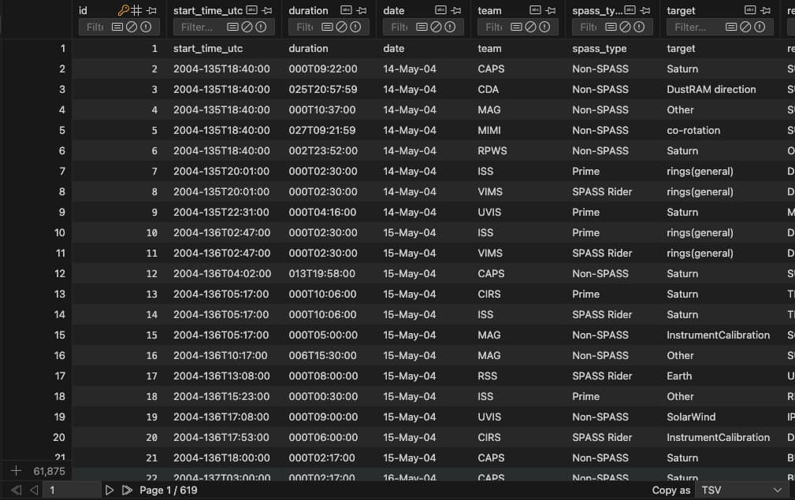

I have a friend who works (like me) as a software engineer
I call him a few times a week, and we talk about things going on in our life, tech, work - a whole host of things
He told me recently (because he's started a new job) about some cool AI stuff he's been doing
I was intrigued, and wanted to try and do two things with my next project
When I say "for AI" I mean, I wanted to try and make a Model Context Protocol (MCP) server
We've "solved" essentially how to nicely prompt machines with language models, but one problem we currently face is the data we use to train these models is so large they aren't specialists
These language models can act like a therapist, a friend, a devil's advocate - whatever you want
An MCP server is a protocol for allowing AIs to search the web, query data, run terminal commands, do automated tasks etc.
It's augmenting AI to be much, much more powerful - and I wanted to try and make my AI much more specific, over a small area of domain knowledge, and so here began project 10!
I found a database of the Cassini-Huygens space-research mission by NASA
This was a 13 year mission, between 2004-2017, and was created to study the planet Saturn and its system, including its rings and natural satellites
The probe orbited Saturn 294 times, and the database of logs is free and has approx 61,874 activities logged
This looks like a good start!
I wanted to try and ask Claude to break this server down into 5 iterations, and do each section at a time
I also asked it to create audit logs (of what I prompted) and what it did in my docs folder, which it did successfully, you can view here
I can now just prompt, and let Claude do most of the work here
Okay, iteration 1 through 5 is now complete - let's test this with our client
This has been a pretty interesting learning exercise for me to learn more about AI
So far, I'm a little pessimistic and largely agree with Linus Torvalds who said AI coding is fine, as long as it's not being used in production - but I'm intrigued to see how development cycles change over the coming years
We've officially reached 1/3 of the way through 30 projects!
Onwards dear knight, to project 11 ✔️